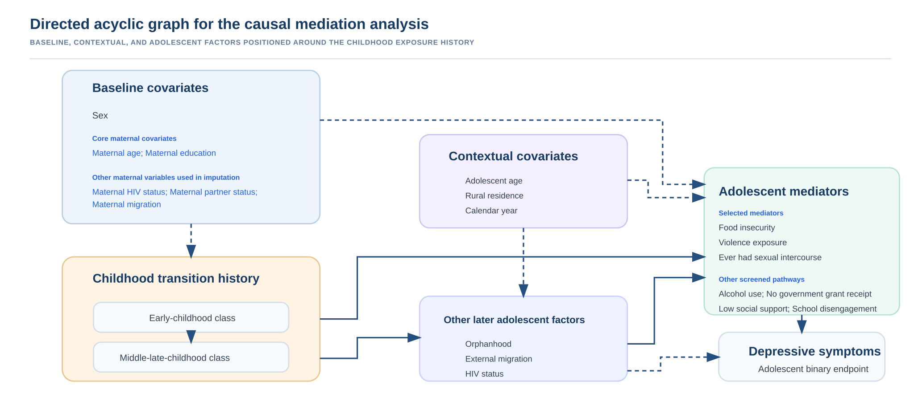
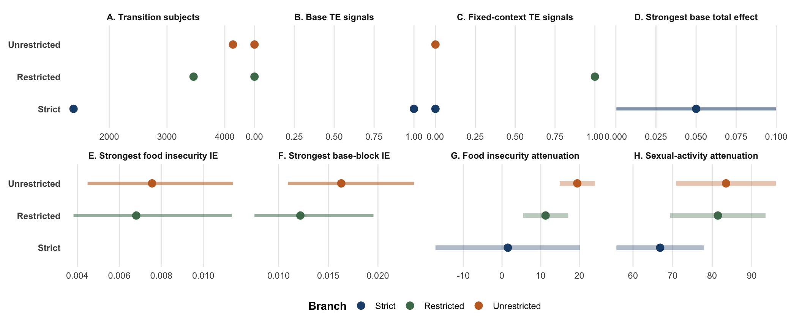

| Window | Contrast | N | Reference risk | Comparator risk | Risk difference (95% CI) | Interpretation |
|---|---|---|---|---|---|---|
| 0-5 years | High Maternal Absence, Low SES vs Low Maternal Absence, Improving SES | 1381 | 3.0% | 7.1% | 0.042 (-0.014, 0.098) | positive; interval includes 0 |
| 0-5 years | Low Maternal Absence, Low SES vs Low Maternal Absence, Improving SES | 1381 | 3.0% | 2.8% | -0.002 (-0.023, 0.019) | negative; interval includes 0 |
| 0-5 years | Rising Maternal Absence, Improving SES vs Low Maternal Absence, Improving SES | 1381 | 3.0% | 2.1% | -0.009 (-0.049, 0.032) | negative; interval includes 0 |
| 0-5 years | Rising Maternal Absence, Low SES vs Low Maternal Absence, Improving SES | 1381 | 3.0% | 2.9% | -0.001 (-0.031, 0.030) | negative; interval includes 0 |
| 6-12 years | Decreasing Maternal Absence, Low SES vs Low Maternal Absence, Higher SES | 1381 | 1.8% | 4.0% | 0.022 (-0.026, 0.070) | positive; interval includes 0 |
| 6-12 years | High Maternal Absence, Improving SES vs Low Maternal Absence, Higher SES | 1381 | 1.8% | 4.3% | 0.025 (-0.011, 0.061) | positive; interval includes 0 |
| 6-12 years | High Maternal Absence, Low SES vs Low Maternal Absence, Higher SES | 1381 | 1.8% | 8.4% | 0.066 (0.005, 0.127) | positive; interval excludes 0 |
| 6-12 years | Low Maternal Absence, Improving SES vs Low Maternal Absence, Higher SES | 1381 | 1.8% | 2.4% | 0.006 (-0.014, 0.027) | positive; interval includes 0 |
| 6-12 years | Low Maternal Absence, Low SES vs Low Maternal Absence, Higher SES | 1381 | 1.8% | 2.0% | 0.002 (-0.026, 0.030) | positive; interval includes 0 |
| 6-12 years | Rising Maternal Absence, Improving SES vs Low Maternal Absence, Higher SES | 1381 | 1.8% | 5.7% | 0.039 (-0.014, 0.092) | positive; interval includes 0 |
Objective 5: Causal Mediation
Objective-level results page for formal causal mediation analysis.
Why This Work Was Needed
Objective 5 carries the retained childhood exposure histories, harmonized depressive-symptom endpoint, and prioritized adolescent pathway domains into formal causal mediation analysis. The purpose is no longer pathway screening alone. The analysis estimates total effects, direct effects, mediator-specific indirect effects, and combined-pathway indirect effects on the risk-difference scale.
The public interpretation remains intentionally conservative. These are observational mediation analyses, so the estimates are treated as pathway-consistent evidence under measured-adjustment assumptions rather than as standalone proof that a pathway is causally identified.
Analysis Scope
The finalized implementation is anchored on the strict joint-history branch requiring at least three complete childhood occasions per developmental window. The primary exposure is the joint maternal-absence plus household socioeconomic status history because it preserves developmental ordering and represents co-occurring relational and material adversity.
The core mediator set carried forward from Objective 4 is:
- food insecurity;
- violence exposure; and
- ever having had sexual intercourse.
The primary joint-history analytical sample includes 1381 participants. Maternal baseline covariates were multiply imputed using 20 imputations, and posterior-probability-weighted pseudo-records were carried forward so that trajectory-class uncertainty was retained.
Causal Structure
The working diagram below summarizes the analysis structure: childhood transition histories define the exposure, the adolescent pathway block carries the retained mediator set, and the harmonized depressive-symptom endpoint is the outcome.

Total Effect Results
The primary total-effect analysis compares adverse joint histories against lower-risk reference histories. The strongest retained total-effect signal was in middle-late childhood: high maternal absence with low household socioeconomic status versus low maternal absence with higher household socioeconomic status.
Mediation Decomposition
The three-mediator block provides the main decomposition surface. For the focal middle-late-childhood contrast, the total effect remained positive and the combined indirect effect was also positive, but uncertainty intervals still crossed or approached the null. This is why the results are reported as pathway-consistent evidence rather than as a claim that the measured mediator block fully explains the exposure-outcome association.

| Window | Contrast | Effect | N | Risk difference (95% CI) | Percent mediated | Interpretation |
|---|---|---|---|---|---|---|
| 0-5 years | High Maternal Absence, Low SES vs Low Maternal Absence, Improving SES | Block direct effect | 1365 | 0.025 (-0.023, 0.073) | - | positive; interval includes 0 |
| 0-5 years | High Maternal Absence, Low SES vs Low Maternal Absence, Improving SES | Total effect | 1365 | 0.038 (-0.017, 0.093) | - | positive; interval includes 0 |
| 0-5 years | High Maternal Absence, Low SES vs Low Maternal Absence, Improving SES | Total indirect effect | 1365 | 0.013 (-0.003, 0.028) | 33.3% | positive; interval includes 0 |
| 6-12 years | High Maternal Absence, Low SES vs Low Maternal Absence, Higher SES | Block direct effect | 1365 | 0.043 (-0.008, 0.095) | - | positive; interval includes 0 |
| 6-12 years | High Maternal Absence, Low SES vs Low Maternal Absence, Higher SES | Total effect | 1365 | 0.064 (0.001, 0.127) | - | positive; interval excludes 0 |
| 6-12 years | High Maternal Absence, Low SES vs Low Maternal Absence, Higher SES | Total indirect effect | 1365 | 0.021 (-0.000, 0.042) | 32.4% | positive; interval includes 0 |
Mediator-Specific Signals
Mediator-specific decompositions were estimated for the core pathway domains. The strongest indirect-effect patterns were generally carried by food insecurity and ever having had sexual intercourse, while violence exposure remained important for pathway interpretation but showed smaller indirect-effect estimates in the retained decomposition tables.
| Window | Contrast | Mediator | N | Indirect risk difference (95% CI) | Percent mediated | Interpretation |
|---|---|---|---|---|---|---|
| 0-5 years | High Maternal Absence, Low SES vs Low Maternal Absence, Improving SES | Ever had sexual intercourse | 1365 | 0.004 (-0.006, 0.014) | 9.8% | positive; interval includes 0 |
| 0-5 years | High Maternal Absence, Low SES vs Low Maternal Absence, Improving SES | Food insecurity | 1381 | 0.009 (-0.003, 0.021) | 21.6% | positive; interval includes 0 |
| 0-5 years | High Maternal Absence, Low SES vs Low Maternal Absence, Improving SES | Violence exposure | 1381 | 0.002 (-0.003, 0.007) | 4.4% | positive; interval includes 0 |
| 6-12 years | High Maternal Absence, Low SES vs Low Maternal Absence, Higher SES | Ever had sexual intercourse | 1365 | 0.010 (-0.004, 0.024) | 14.9% | positive; interval includes 0 |
| 6-12 years | High Maternal Absence, Low SES vs Low Maternal Absence, Higher SES | Food insecurity | 1381 | 0.015 (-0.002, 0.031) | 22.3% | positive; interval includes 0 |
| 6-12 years | High Maternal Absence, Low SES vs Low Maternal Absence, Higher SES | Violence exposure | 1381 | -0.000 (-0.005, 0.004) | - | negative; interval includes 0 |
Robustness and Interpretation
The context-adjusted mediation analyses add adolescent age, rural residence, and calendar year to the base maternal-background adjustment set. These models are interpreted as stability checks rather than replacements for the base causal mediation estimand.
The fixed-context comparison showed that some indirect-effect estimates attenuated after contextual adjustment, especially the ever-sexual-intercourse pathway in the early-childhood focal contrast. Food insecurity remained directionally positive in the main focal contrasts, but uncertainty intervals still require cautious interpretation.
| Window | Contrast | Mediator | Base indirect estimate | Context-adjusted indirect estimate | Change | Interpretation |
|---|---|---|---|---|---|---|
| 0-5 years | High Maternal Absence, Low SES vs Low Maternal Absence, Improving SES | Ever had sexual intercourse | 0.004 (-0.006, 0.014) | 0.001 (-0.005, 0.007) | -0.003 | Attenuated after fixed-context adjustment |
| 0-5 years | High Maternal Absence, Low SES vs Low Maternal Absence, Improving SES | Food insecurity | 0.009 (-0.003, 0.021) | 0.008 (-0.003, 0.018) | -0.001 | Attenuated after fixed-context adjustment |
| 0-5 years | High Maternal Absence, Low SES vs Low Maternal Absence, Improving SES | Violence exposure | 0.002 (-0.003, 0.007) | 0.004 (-0.003, 0.011) | 0.002 | Base indirect effect near null; attenuation not summarised |
| 6-12 years | High Maternal Absence, Low SES vs Low Maternal Absence, Higher SES | Ever had sexual intercourse | 0.010 (-0.004, 0.024) | 0.003 (-0.005, 0.012) | -0.007 | Attenuated after fixed-context adjustment |
| 6-12 years | High Maternal Absence, Low SES vs Low Maternal Absence, Higher SES | Food insecurity | 0.015 (-0.002, 0.031) | 0.015 (-0.002, 0.033) | 0.001 | Larger after fixed-context adjustment |
| 6-12 years | High Maternal Absence, Low SES vs Low Maternal Absence, Higher SES | Violence exposure | -0.000 (-0.005, 0.004) | -0.000 (-0.007, 0.006) | 0 | Base indirect effect near null; attenuation not summarised |
Main Recommendation
The current recommendation is:
- use the strict joint-history branch as the primary causal mediation surface;
- treat the high maternal-absence plus low-socioeconomic-status history in middle-late childhood as the main adverse contrast;
- retain food insecurity, violence exposure, and ever having had sexual intercourse as the primary mediator block;
- interpret mediator-specific estimates descriptively and conservatively because indirect-effect intervals commonly include the null;
- report total effects and block decompositions together, rather than over-interpreting any single mediator in isolation.
What This Means For CO-LUMINATE
For the broader CO-LUMINATE program, Objective 5 provides the formal mediation bridge between childhood social-determinant histories and adolescent depressive symptoms. The findings support a pathway ecology in which material deprivation, violence exposure, and adolescent sexual-risk markers carry part of the social-stress signal, but they do not exhaust the mechanisms described by youth co-creators or implied by the longitudinal exposure histories.
The public-facing interpretation should therefore emphasize both the measurable pathway evidence and the limits of the measured mediator block. This aligns Objective 5 with the Statistical Analysis Plan and keeps the causal language appropriately cautious.